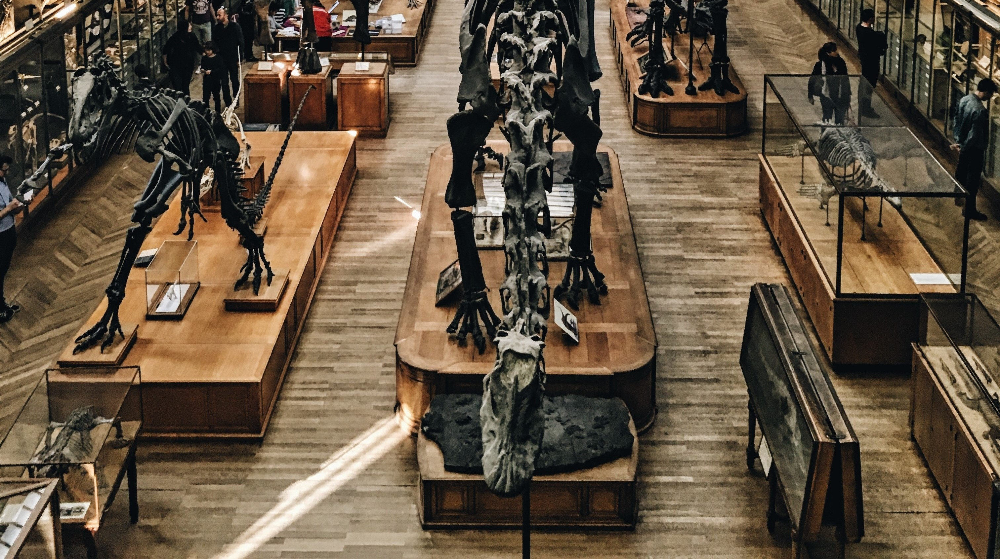

References list
Dinosaur skeleton museum(2015). Retrieved from
https://unsplash.com/photos/ae1zKHoreQ8

Man gazes at gold ceiling(2017). Retrieved from
https://unsplash.com/photos/EjXX-vhMdLI
Sailing Sunset GIF(2016). Retrieved from
https://tenor.com/view/sailing-into-the-sunset-gif-5162790

WAVES EXPLORE STICKER BY OCEANX(2019). Retrieved from
https://giphy.com/stickers/oceanx-ocean-ship-g0yCDwwBxLJyFd9RYB

Boat in Body of Water Under Cloudy Sky(2019). Retrieved from
https://www.pexels.com/photo/adventure-beach-boat-clouds-382167
Beige Analog Compass(2019). Retrieved from
https://www.pexels.com/photo/beige-analog-gauge-697662
Pencil on White Smartcase Near Eyeglasses(2019). Retrieved from
https://www.pexels.com/photo/pencil-on-white-smartcase-near-eyeglasses-163185

Ship on display in museum(2019). Retrieved from
https://www.stockfreeimages.com/mydownloads.php

Photo of an old tram in Melbourne Tram Museum(2019). Retrieved from
https://unsplash.com/photos/d1jy54SUhZY

Age of Discovery(2014, December 4). Age of Discovery. Retrieved from
https://youtu.be/i4De5XvqzLk
Trenc,M.(1993).The Night at the Museum. United States,US:Barron's Educational Series.
Scurvy During Magellan's Voyage. (1967).Bulletin of the New York Academy of Medicine(p.346).
Leonard J, H., & Walter H. C, B. (2014). Scurvy Aboard Ferdinand Magellan’s Voyage of Circumnavigation. JAMA Dermatology(pp.742-742). doi:10.1001/jamadermatol.2014.21
Wikipedia.(2019).Age of Discovery. Retrieved from
https://en.wikipedia.org/wiki/Age_of_Discovery
Wikipedia.(2019).Ferdinand Magellan. Retrieved from
https://en.wikipedia.org/wiki/Ferdinand_Magellan